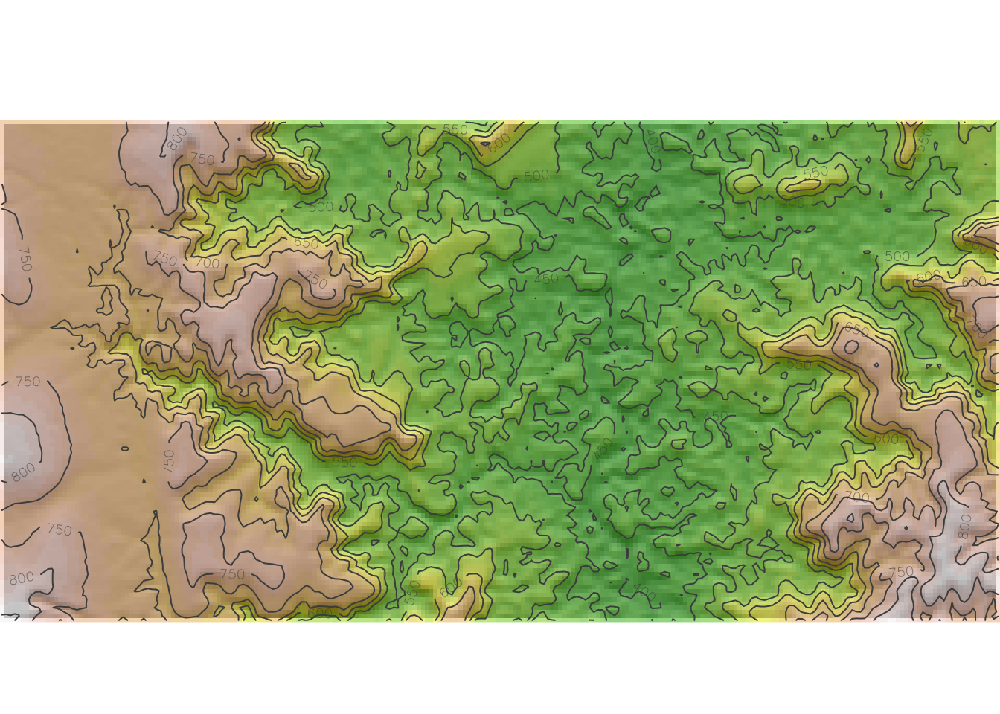
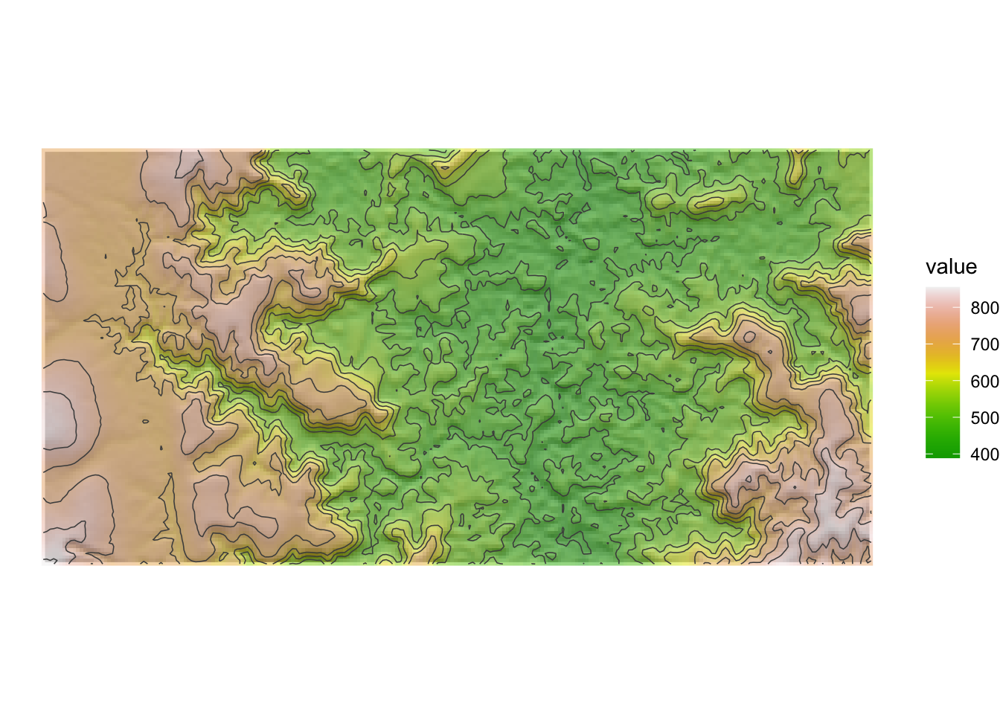

set.seed(6805)
library(tidyverse) |> suppressPackageStartupMessages()
library(sf) |> suppressPackageStartupMessages()
library(ragg) |> suppressPackageStartupMessages()
library(terra) |> suppressPackageStartupMessages()
library(tidyterra) |> suppressPackageStartupMessages()Topo v2 Scratch
#### Define area
lat_range <- c(-5.0, -6.0)
lon_range <- c(15, 20)
# And the window around this centroid
lat_radius <- 0.05
lon_radius <- 0.1
get_elevation_data <- function(
lon_center, lat_center, coords_sf,
resolution=5
) {
elev_full <- geodata::elevation_3s(
lon = lon_center, lat = lat_center,
res = resolution,
country = "Tanzania",
path = getwd()
)
elev_crop <- terra::crop(elev_full, coords_sf)
return(elev_crop)
}
gen_random_table <- function(rand_seed=NULL) {
rand_seed <- ifelse(
is.null(rand_seed),
sample(1:9999, size=1),
rand_seed
)
set.seed(rand_seed)
writeLines(paste0("RNG seed: ",rand_seed))
lat_center <- runif(n=1, min=min(lat_range), max=max(lat_range))
lon_center <- runif(n=1, min=min(lon_range), max=max(lon_range))
lon_lower <- lon_center - lon_radius
lon_upper <- lon_center + lon_radius
lat_lower <- lat_center - lat_radius
lat_upper <- lat_center + lat_radius
coords_df <- tibble::tribble(
~x, ~y,
lon_lower, lat_lower,
lon_lower, lat_upper,
lon_upper, lat_lower,
lon_upper, lat_upper
)
coords_sf <- st_as_sf(
coords_df, coords = c("x", "y"), crs = 4326
)
# Using geodata
elev <- get_elevation_data(
lon_center, lat_center, coords_sf
)
return(elev)
}
compute_hillshade <- function(terrain_elev) {
# Calculate hillshade
slopes <- terra::terrain(terrain_elev, "slope", unit = "radians")
aspect <- terra::terrain(terrain_elev, "aspect", unit = "radians")
hillshade <- terra::shade(slopes, aspect)
names(hillshade) <- "shades"
return(hillshade)
}
plot_hillshade <- function(terrain_raster, hillshade) {
## Plot hillshading as basemap
base_plot <- terra::plot(
hillshade, col = gray(0:100 / 100),
legend = FALSE, axes = FALSE,
mar=c(0,0,1,0),
grid=FALSE
)
# overlay with elevation
color_vec <- terrain.colors(25)
plot(
terrain_raster, col = color_vec, alpha = 0.5,
legend = FALSE, axes = FALSE, add = TRUE
)
# add contour lines
terra::contour(
terrain_raster, col = "grey30", add = TRUE
)
}
# Uncomment and change the rand_seed argument for
# deterministic generation
# terrain_raster <- gen_random_table(rand_seed=6807)
terrain_raster <- gen_random_table()RNG seed: 9746terrain_hillshade <- compute_hillshade(terrain_raster)
plot_hillshade(terrain_raster, terrain_hillshade)
With ggplot2:
pal_greys <- hcl.colors(100, "Grays")
index <- terrain_hillshade |>
mutate(
index_col = round(
scales::rescale(shades, to = c(1, length(pal_greys)))
)
) |>
pull(index_col)
# Get cols
vector_cols <- pal_greys[index]
ggplot() +
tidyterra::geom_spatraster(
data=terrain_hillshade,
fill=vector_cols,
# maxcell=Inf,
# alpha=0.9,
) +
scale_fill_terrain_c(
"Elevation",
direction=-1,
# n.breaks=25
) +
tidyterra::geom_spatraster(
data=terrain_raster,
alpha=0.5
) +
tidyterra::geom_spatraster_contour(
data=terrain_raster,
color='grey30',
linewidth=0.275
) +
# scale_fill_terrain_b(
# alpha=1.0, n.breaks=25
# ) +
theme_void()